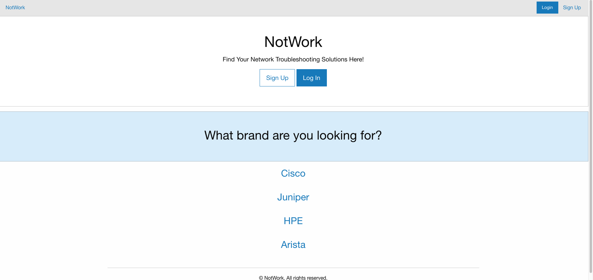
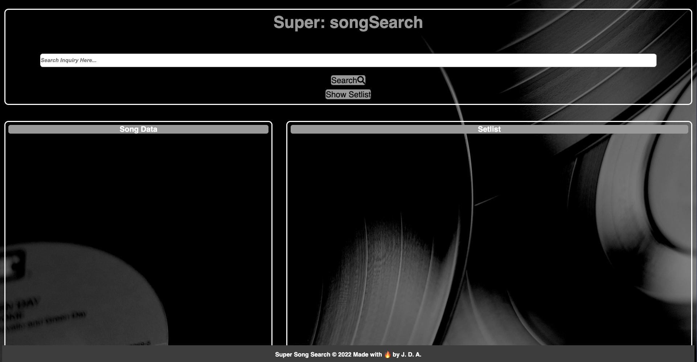

Recent Work
NotWork
NotWork is a Network Troubleshooting Solutions site aimed at networking engineers and DIY'ers that are looking for quick answers to their network equipment related issues.
I worked with three other people on this project (Tez, Will, and Jake) to bring this project to fruition. Jake himself works as a network engineer, and often had trouble finding quick answers to just about any issue he ran into. The idea behind this project was to find a way to start creating a centralized and easy-to-navigate application where users could ask and answer questions about their networking equipment.
I had at least a small part in every aspect of this project, but my main focus was on making sure all of the different parts of the application could speak to one another properly using routes in a Node.js platform.
You can see the finished product by clicking the image below, or click here to see the GitHub repository.
Super Song Search
Super Song Search is a simplified application for musicians to be able to search for song tablature/notation as well as corresponding lyric sheets.
This was a project taken on by myself and two others; our reasoning for creating the app was because two of us have been working musicians before, and it's a real pain not to have what you need for a gig.
I myself mainly worked on getting the Javascript and getting two separate online resources to work in tandem under one search function.
You can see the finished product by clicking the image below, or click here to see the GitHub repository.
